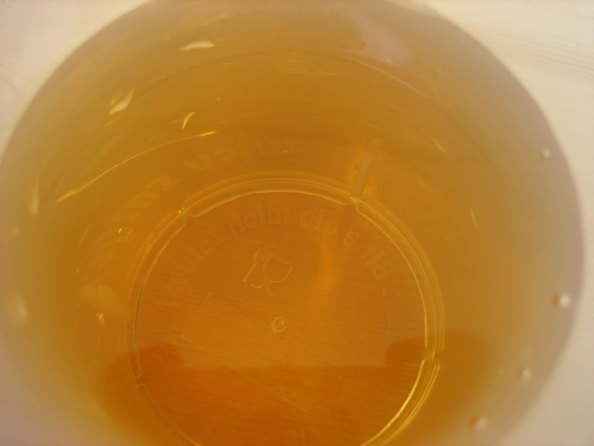

Taste
Tastings during open hours; official page distinguishes guided tasting from tap flight.
ExploreMeadery / tasting room / events / Pittsboro, North Carolina
Mead tastings and tours at The Plant in Pittsboro.
Plan a tasting-room visit
01 / A useful next step
Use the meadery’s own details for tasting options, tour arrangements and the current calendar.
02 / A useful next step
Practical notes from the business’s visit page; confirm current details on the official site.
Children welcome; friendly dogs outdoors on porch/backyard; service dogs only inside.
Read the business’s own informationRegular Mon–Sat noon–6, Sun 1–5; tours Sat/Sun at 2 and 4.
Read the business’s own informationVISIT & CONTACT
Use the business’s own information for current details and availability.
130 Lorax Lane, Pittsboro, NC 27312; The Plant
984-312-5820
No. These controls help prepare questions only. Nothing is submitted or reserved. Continue through the business’s official routes for current details.
No. The credited contextual photographs illustrate the subject; they do not depict this business, its inventory, staff or completed work.